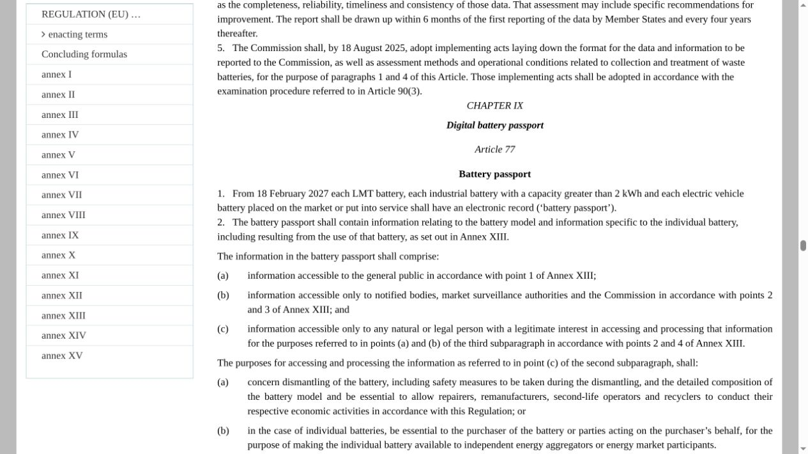

欧盟电助力自行车进入市场：电动车贸易商要准备的 4 道合规关卡
基于欧盟截至 2026 年 11 月的法规原文，梳理 250W/25km/h 分类边界、2027 年机械法规切换、LMT 电池护照和线上产品信息要求，并转化为电动车贸易商可执行的资料清单。
先说结论：合规不是一张证书，而是一条证据链
对出口欧盟的电助力自行车，产品分类、整车机械安全、电池要求、线上信息和欧盟经济运营商责任相互连接。单独拿到一份测试报告，并不能证明具体 SKU、当前配置、说明书、标签和销售页面都处于一致状态。
本文是截至 2026 年 11 月 19 日的业务研究，不是法律意见。欧盟法规仍可能通过实施法案、协调标准清单和成员国执行规则继续更新；正式上市前应让欧盟进口商、合规负责人和具备对应范围的实验室复核每个 SKU。
关卡一：先锁定 250W/25km/h 的车辆分类边界
欧盟法规 168/2013 第 2(2)(h) 条把一类脚踏助力自行车排除在该法规的机动车型式批准范围之外：最大连续额定功率不超过 250W；骑手停止踩踏时电机停止输出；助力随速度逐渐降低，并在达到 25km/h 之前切断。这里应核对的是整车控制逻辑和最大连续额定功率，而不只是网页上的营销名称。
满足这条排除条件不等于自动完成全部欧盟合规。它只解决 168/2013 的范围判断，整车仍需处理适用的机械安全、其他产品法规、标签、技术文件和销售国要求。超过边界的车型可能进入 L 类车辆体系，应在报价和样品确认之前单独分类，不能与普通 EPAC 共用一套声明。

关卡二：为 2027 年机械法规切换准备双时间线
欧盟委员会说明，2027 年 1 月 20 日之前投放欧盟市场的机械产品仍必须符合机械指令 2006/42/EC；机械法规 (EU) 2023/1230 从 2027 年 1 月 20 日起强制适用。对于在 2026 年末开发、但可能在 2027 年后出货的车型，电动车贸易商不应只按下单日期判断，而应与进口商确认具体的“投放市场”时间和适用法规。
协调标准是证明符合基本安全要求的一种自愿路径，其引用需要在欧盟官方公报中发布。实际做法是为每个 SKU 建立一张法规—风险—测试—证据矩阵，并让实验室确认当前适用的标准版本和新旧机械法规过渡安排，而不是把一张历史测试证书直接复制到新配置。
关卡三：把电池当成独立的数据产品管理
欧盟电池法规把电动自行车和电动滑板车电池归入轻型交通工具电池（LMT battery）。欧盟委员会概述的规则覆盖可持续性、安全、标签、供应链尽职调查和报废管理，而不是只有运输测试。
法规第 77 条规定，从 2027 年 2 月 18 日起，每个投放市场或投入使用的 LMT 电池都应具有电子电池护照，并通过唯一标识关联数据。电动车贸易商应把准备工作前移到电芯和电池包供应商：先建立型号、化学体系、容量、制造工厂、合规声明、状态与寿命参数、维修拆解信息和责任人的字段字典，再评估未来 QR 码和电池护照由谁创建、更新和保存。
不要等到客户要求二维码时才开始补数据。更稳妥的采购条款是把法规所需数据、变更通知、批次追溯和持续更新责任写进电池供应协议，并确保更换电芯、BMS 或壳体后触发重新评估。

关卡四：让产品页成为合规证据链的一部分
欧盟通用产品安全法规第 19 条要求，面向欧盟消费者的线上或远程销售要约清晰展示制造商名称及邮政和电子地址；制造商不在欧盟时还要展示欧盟责任人的名称及联系方式；同时提供产品图片、型号或其他识别信息，以及适用的警告和安全信息。
B2B 电动车网站应先判断产品页面究竟是询盘展示，还是已经构成面向欧盟消费者的销售要约。即使页面只服务经销商，也建议建立可复用的“经销商合规资料包”，让客户能准确发布型号、制造商、欧盟责任人、警告、说明书版本和产品图片，减少下游自行复制错误信息。
给电动车贸易商：一周内可以完成的检查清单
第一，给现有车型建立分类表：连续额定功率、最高助力速度、停止踩踏后的输出逻辑、油门或助推功能、目标国家和预定投放时间。任何一项超出普通 EPAC 边界时，单独升级评审。
第二，为每个 SKU 建立版本化证据包：BOM 与关键部件版本、风险评估、测试报告、符合性声明、标签、说明书、产品照片、序列号规则和变更记录。要求销售报价单引用明确的 SKU 与资料包版本。
第三，向电池供应商发一份 2027 数据问卷，确认电池护照字段、唯一标识、数据所有者、更新接口、可拆卸与更换方案、批次追溯和变更通知能力。把无法提供的数据标为供应链缺口，而不是网站文案问题。
第四，抽查企业产品页和提供给经销商的素材包，检查型号是否唯一、规格是否与测试样品一致、是否存在“250W”与控制器或峰值功率表述混淆、警告和说明书版本是否可追溯。每月记录缺口关闭率、供应商资料按时率和配置变更后的重新评估周期。